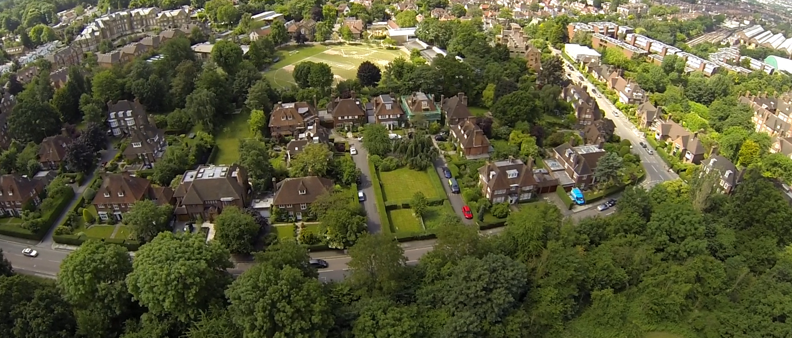
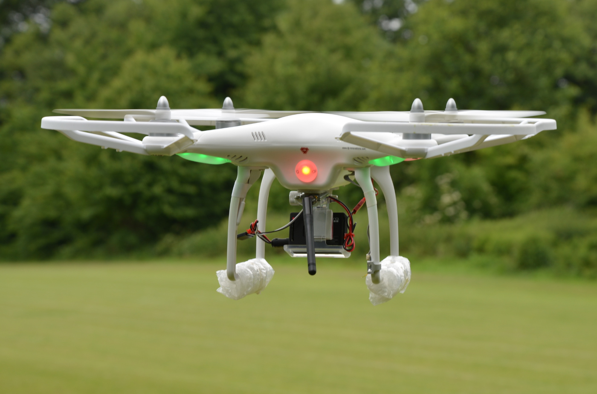

Blindtext
Drone Journalism UK
Masters degree project was nominated for the BBC College of Journalism's Student Innovation Award and featured in City University's XCity magazine.

The aim of the Drone Journalism UK masters project was to gain direct experience in deploying a drone to produce journalistic work. The end result was a multimedia news package on deforestation in Scotland which included drone aerial video together with high-quality stills and long-form writing.
The project was one of four short-listed nominees for the BBC College of Journalism's prestigious Student Innovation Award.
As the founder of the project I was also interviewed and quoted in an article entitled "Here come the drones" for City University's annual XCity journalism magazine.
The inspiration for creating Drone Journalism UK came partly from the pioneering work undertaken by the three main American founders of the field. These include Matt Waite of the Drone Journalism Lab at the University of Nebraska-Lincoln, Matthew Schroyer of DroneJournalism.org and Scott Pham of the Missouri School of Journalism.
The drone used in the project was an early model of the DJI Phantom series. The Phantom is an extremely light-weight multi-rotor copter with sophisticated GPS positioning capabilities. It is highly maneuverable and features robust components enabling it to withstand the wear and tear of the field.
